3Current Code ↔ Recommended Code (avec les lignes)
4Les mêmes règles dans l'IDE, la CLI, la CI/CD (Code Analyzer)
📍 ApexGuru Insights › Test Cases
La visite · onglet
ApexGuru écrit vos tests
Ce qu'il met en avant : les chemins non couverts… et le test qui les couvre
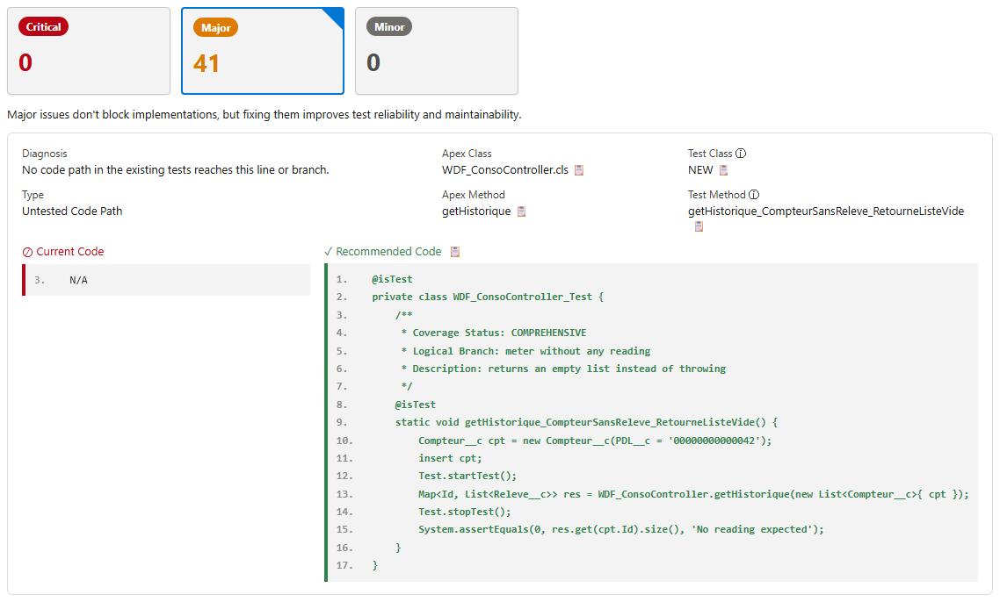
1« Untested Code Path » + une méthode de test nommée
2Le test complet : données, startTest/stopTest, assertions
📍 ApexGuru Insights › Code Duplicates
La visite · onglet
Le copier-coller, chiffré
Ce qu'il met en avant : la dette de duplication et comment la résorber
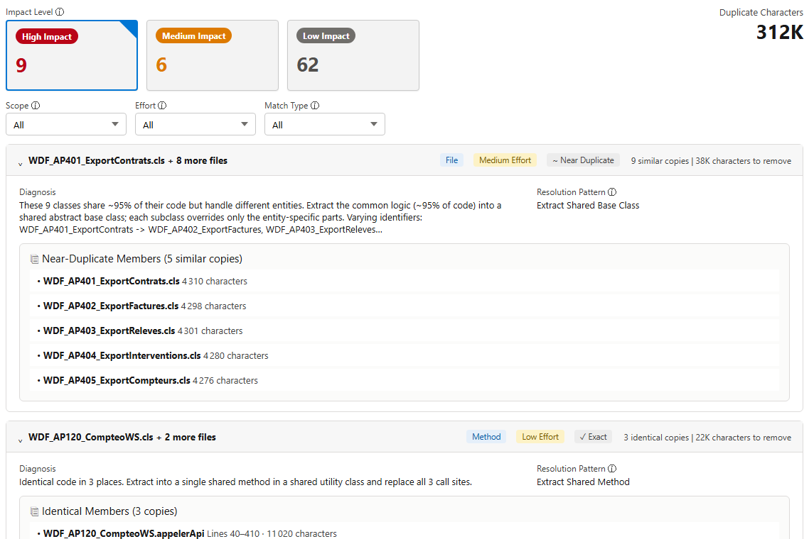
1312 K caractères dupliqués
2Portée, effort, exact ou « near duplicate »
3Le schéma de résolution : Extract Shared Base Class…
📍 ApexGuru Insights › Unused Methods
La visite · onglets
Le code mort
Ce qu'il met en avant : ce qu'on pourrait supprimer
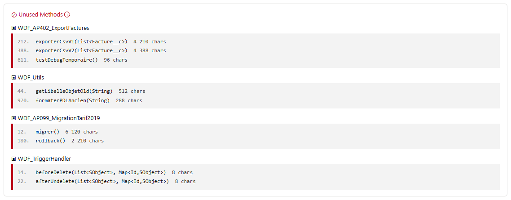
1Unused Methods : par classe, ligne et taille en caractères
2Des migrations jamais supprimées : du code mort… mais à tester et à maintenir
⚠️ Une indication, pas une vérité : l'outil ne dit pas comment il décide qu'une méthode est « inutilisée ».
Les méthodes polymorphes (surchargées, appelées via une interface) et celles appelées depuis une page Visualforce sont souvent mal interprétées. On vérifie avant de supprimer !
📍 Scale Insights › Database Insights
La visite · Scale Insights
Database Insights
Ce qu'il met en avant : les SOQL qui coûtent, et celles qui se dégradent
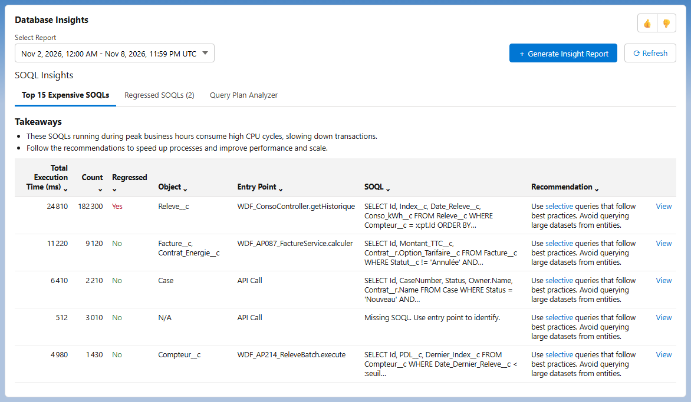
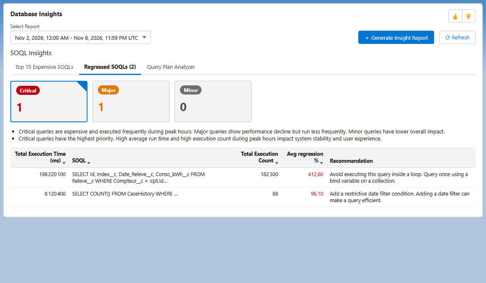
1Top 15 sur la semaine : temps, volume, objet, entry point
2« Regressed » : elle était plus rapide avant
3Regressed SOQLs : % de régression + recommandation
📍 Database Insights › Query Plan Analyzer
La visite · onglet
L'outil de 2026 contre l'ancêtre de 2013
Même requête, deux réponses
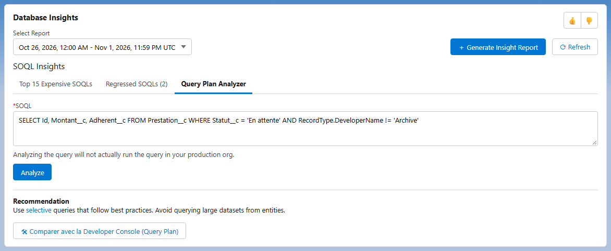
🤖 Scale Center · Query Plan Analyzer (2026, avec de l'IA)
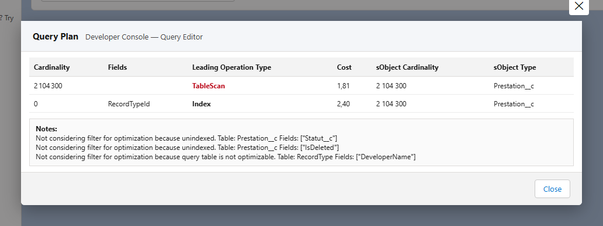
👴 Developer Console · Query Plan (2013)
🔍 🤖 Scale Center · Query Plan Analyzer
1La requête (elle n'est pas exécutée en prod)
2La réponse : « Use selective queries that follow best practices »… et c'est tout.
🔍 👴 Developer Console · Query Plan
1Le plan : TableScan sur 2,1 M lignes, coût 1,81
2Le coupable, nommé : Statut__c non indexé
🤖
L'IAScale Center · 2026
🥊
👴
Le seniorDeveloper Console · 2013
🤖
L'IAScale Center · 2026
« Use selective queries »
🥊
👴
Le seniorDeveloper Console · 2013
TableScan · coût 1,81 · Statut__c non indexé
K.O.
Victoire du senior au 1er round. L'IA demande la revanche… en 2027.
🧓 Vous ne comprenez pas ce que dit papy ? « TableScan · coût 1,81 · Statut__cnon indexé »
Demandez à un LLM de vous le traduire : ça, il sait le faire 😉
Sérieusement : Scale Center trouve le suspect sur la vraie charge ; la Dev Console l'interroge.
📍 Scale Insights › Deployment Insights
La visite · Scale Insights
Deployment Insights
Ce qu'il met en avant : le diff de prod d'un déploiement
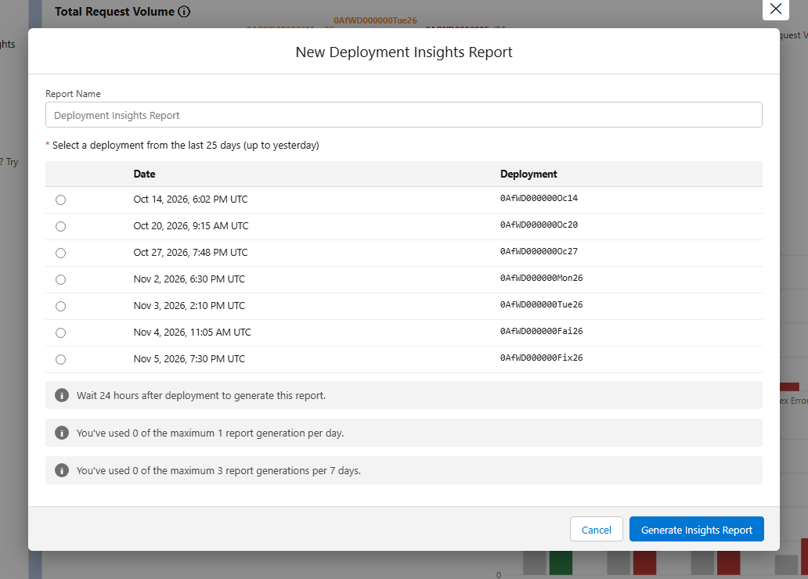
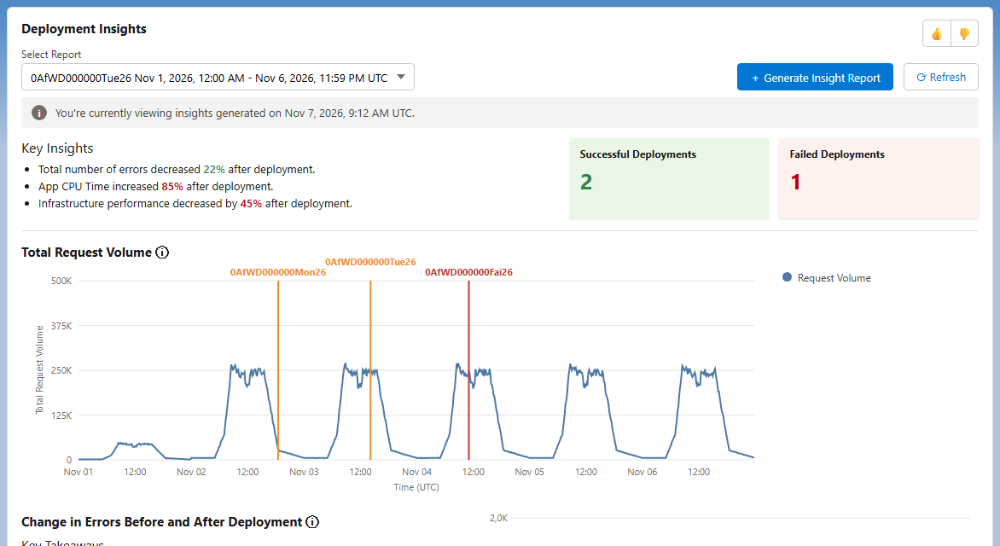
1Les déploiements des 25 derniers jours : on choisit celui à analyser
224 h d'attente · 1 rapport/jour · 3/semaine
3Key Insights : le verdict en 3 phrases
4Le volume, déploiements en lignes verticales
📍 Deployment Insights › Avant / après
La visite · Scale Insights
Avant / après, en un coup d'œil
Ce qu'il met en avant : gris = avant · vert = mieux · rouge = pire
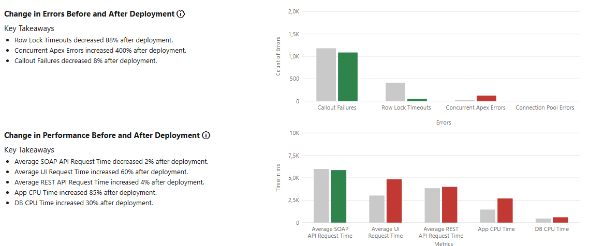
1Les erreurs par type
2Les temps : SOAP, UI, REST, App CPU, DB CPU
📍 Deployment Insights › Errors · User Experience · API · Infrastructure
La visite · Scale Insights
Du clic utilisateur au CPU
Ce qu'il met en avant : le détail par page, par API, par entry point
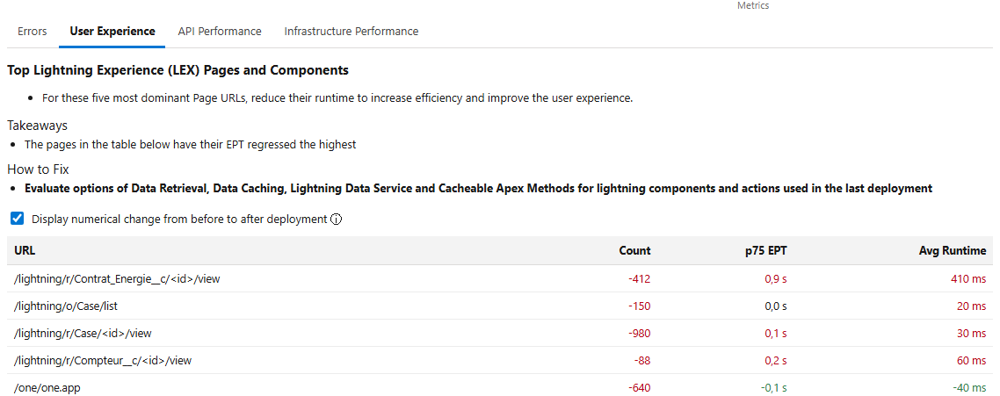
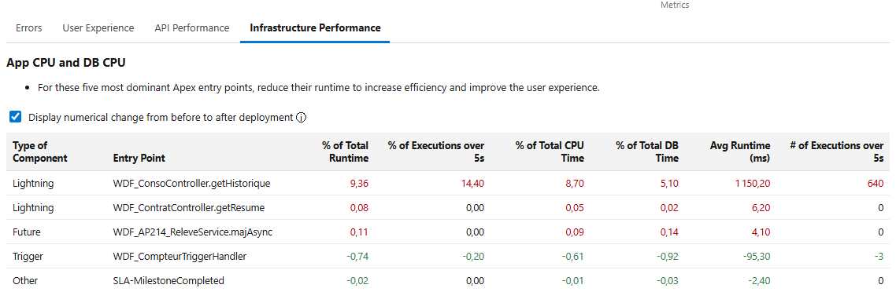
1User Experience : l'EPT de chaque page, avant → après
2Infrastructure : la régression, par entry point
3… et les améliorations aussi
🤔 Tu ne sais pas ce qu'est l'EPT ? On pourrait demander au présentateur… mais pas sûr qu'il sache répondre. Déjà, je dois faire ses slides, et en plus je dois vous expliquer les termes !
EPT = Experienced Page Time : le temps que l'utilisateur attend, mesuré dans son navigateur, entre le clic et une page Lightning complètement affichée et utilisable (tous les composants chargés, plus aucun appel serveur en cours).
C'est la mesure du ressenti, pas du serveur : elle sert à comparer les pages, repérer celles qui rament et vérifier qu'un déploiement ne les a pas ralenties.
P75 (75ᵉ percentile) : 3 affichages sur 4 sont plus rapides que cette valeur. Contrairement à la moyenne, elle n'est pas lissée par les pages rapides : elle montre ce que vivent les utilisateurs les plus mal lotis.
📍 Scale Insights › Governor Limit Insights
La visite · Scale Insights
Governor Limit Insights
Ce qu'il met en avant : les limites d'org, et qui les consomme
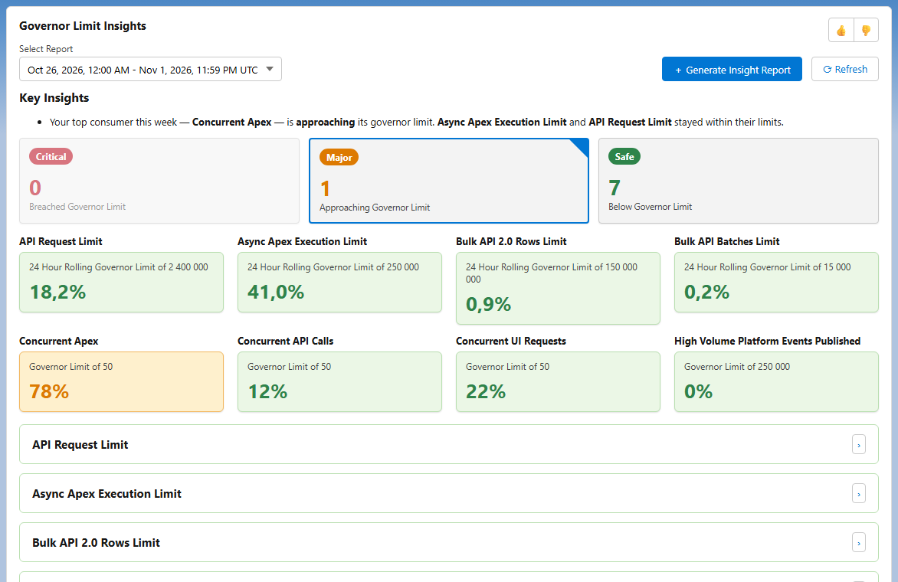
18 limites en % : API, Async Apex, Bulk, Concurrent…
2Breached / Approaching / Safe
3Puis un panneau par limite : qui consomme, et quelle investigation lancer
🔍 Panneau API Request Limit
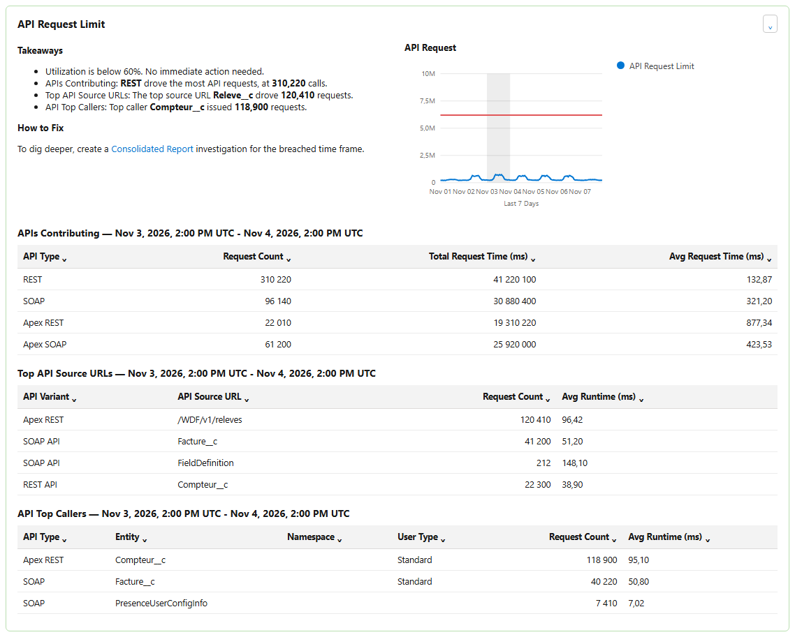
1Takeaways : le type d'API, l'URL source et l'appelant qui consomment le plus
27 jours : la limite en rouge, le jour de pic en gris
3Les tableaux du jour de pic : par type, par URL source, par appelant
4How to Fix → un Consolidated Report
🔍 Panneau Async Apex Execution Limit
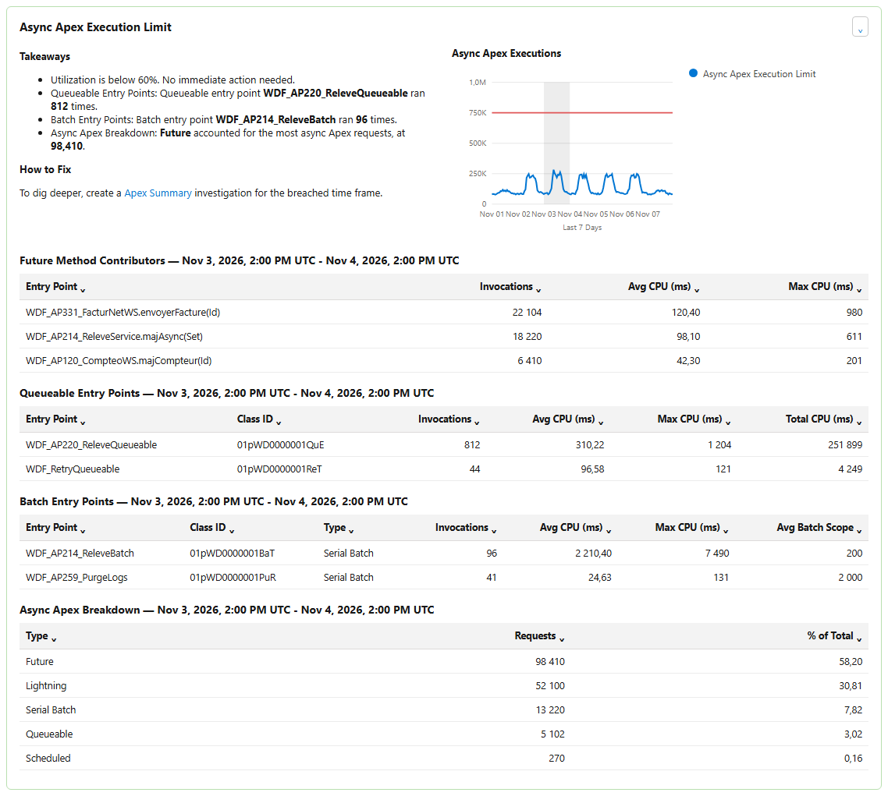
1Future, Queueable, Batch : chaque entry point asynchrone, avec ses invocations et son CPU
2La répartition par type d'asynchrone
3How to Fix → une investigation Apex Summary
🔍 Panneau Concurrent Apex (EnGénie, fin de mois)
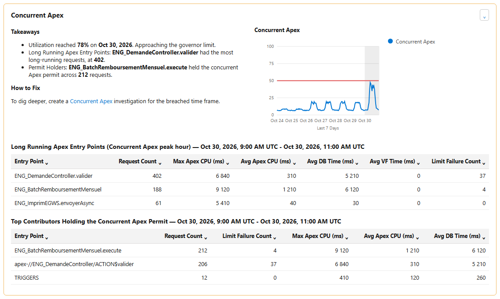
1Approaching : 78 % le 30 octobre
2Les transactions longues de l'heure de pic
3Qui tient le « permis » Concurrent Apex
4How to Fix → une investigation Concurrent Apex
🔍 Panneaux Bulk API 2.0 Rows et Bulk API Batches
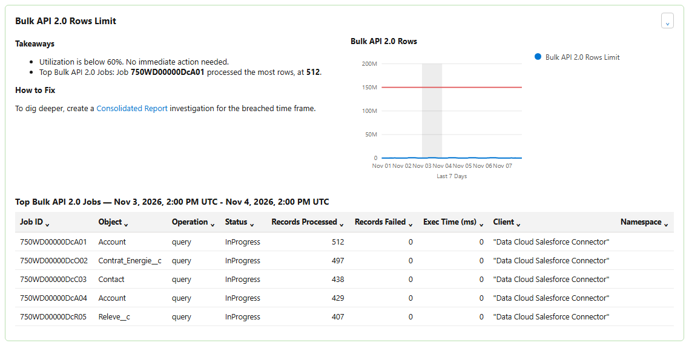
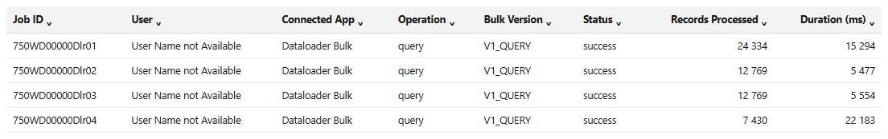
1Qui consomme ? Un connecteur Data Cloud, qui tourne en arrière-plan sans que personne y pense
2Les jobs Dataloader : « User Name not Available ». On sait que ça consomme, pas toujours qui
🔍 Panneau High Volume Platform Events Published
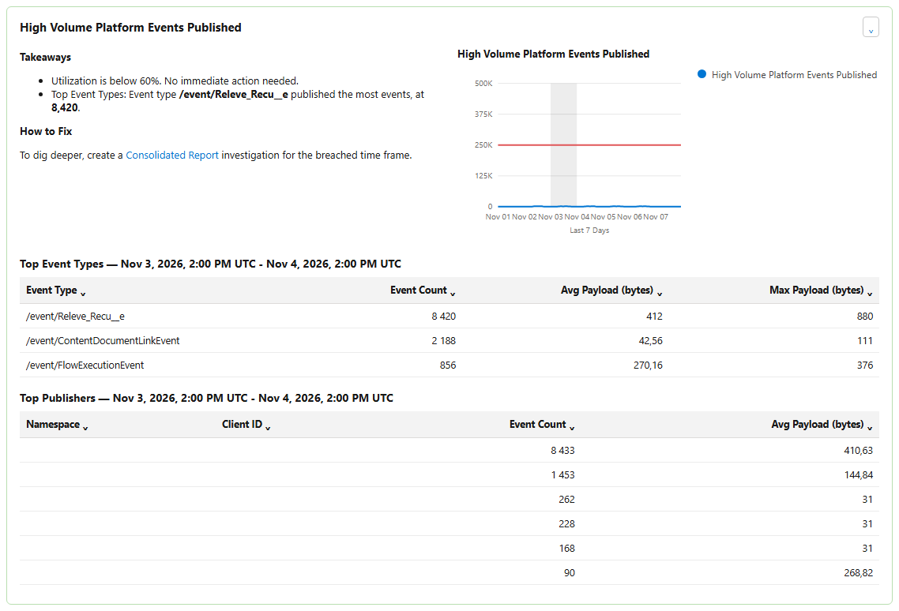
1Les types d'événements publiés
2Top Publishers : qui les publie ?
🕵️ Qui publie ces 8 433 événements ? Mystère : les colonnes Namespace et Client ID sont vides. À vous de mener l'enquête.
📍 Scale Insights › Lightning Experience Insights
La visite · Scale Insights
Lightning Experience Insights
Ce qu'il met en avant : ce que l'utilisateur ressent (EPT au P75)
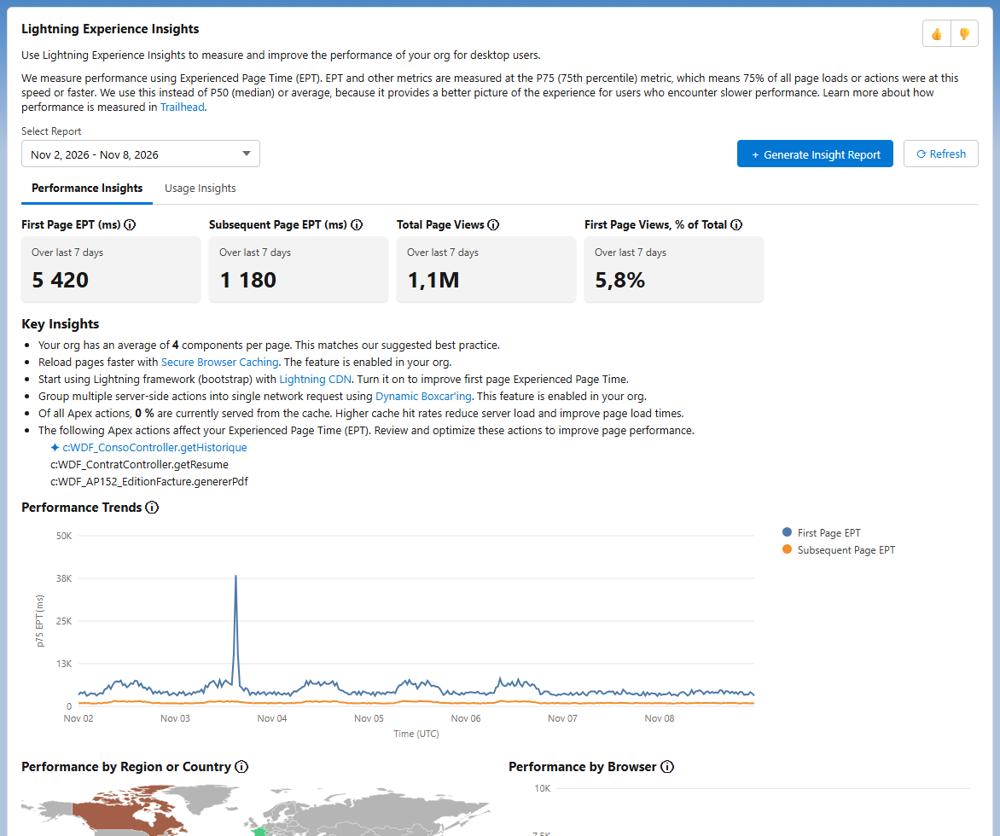
1Pourquoi le P75 et pas la moyenne
21ʳᵉ page (cache froid) vs pages suivantes
3Checklist auto : CDN, cache, boxcar'ing, 0 % de cache Apex, actions Apex lentes
🔍 ① EPT au P75
1L'outil explique lui-même son choix : le P75 plutôt que la médiane ou la moyenne, pour voir l'expérience des utilisateurs les plus lents
🔍 ② Les 4 chiffres de la semaine
21ʳᵉ page (cache froid) : 5,4 s · pages suivantes : 1,2 s · 1,1 M vues, dont 5,8 % de premières pages
🔍 ③ Key Insights
3Une checklist automatique : CDN, cache navigateur, boxcar'ing… 0 % des actions Apex servies par le cache, et la liste des actions Apex qui ralentissent les pages (✦ = ApexGuru a une recommandation)
🍿 Petit souci : comme Chacha n'a pas pensé à cliquer sur « Activer » avant le début de cette session, on va devoir attendre 2 heures.▶ suite au prochain clic
📐 Sur un écran : « page Contrat · 6 380 ms » = 3 chargements sur 4 en moins de 6,4 s. L'objectif : faire baisser ce chiffre, pas courir après chaque cas isolé.
🕑 Indice : le déploiement a eu lieu mardi à 14 h 10.▶ suite au prochain clic
🎯 Une seule ligne de code = 84 % du temps SOQL de toute l'org pendant le pic.
✅ La meilleure régression, c'est celle que la CI refuse de merger.
🔥 L'enregistrement le plus populaire de la mutuelle : 418 personnes ont voulu le modifier en même temps. Il a dit non 418 fois.
⏱️ Un clic sur ④ « Analyze Org Health », et Scale Center calcule son diagnostic : environ 1 minute d'attente. Vous avez failli la subir… mais cette fois, j'ai cliqué avant d'arriver.
⚠️ À ne pas prendre au pied de la lettre : parfois, la SOQL dans un for est volontaire.▶ suite au prochain clic